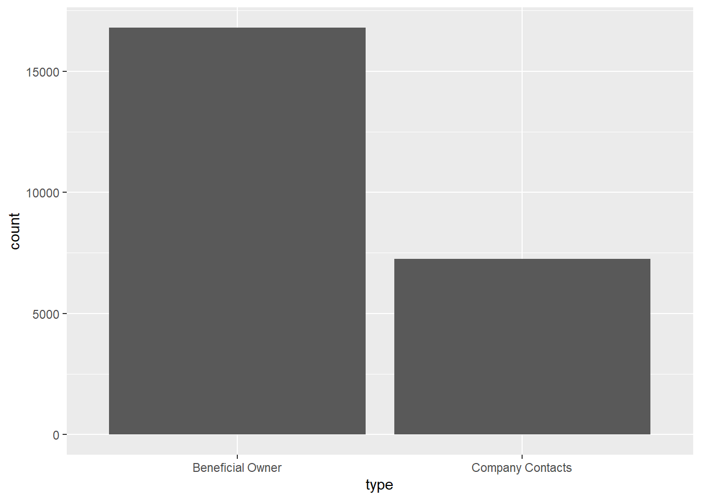
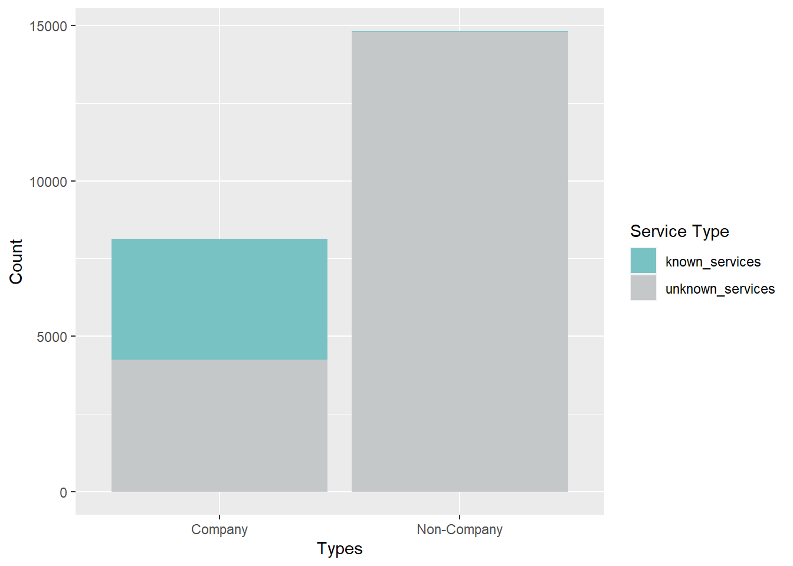
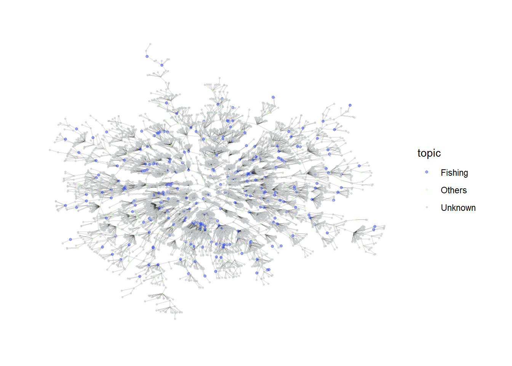
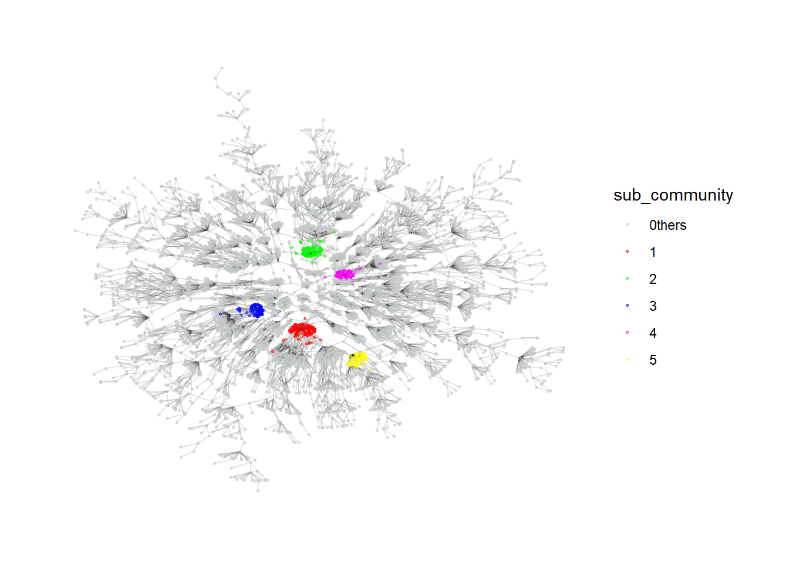
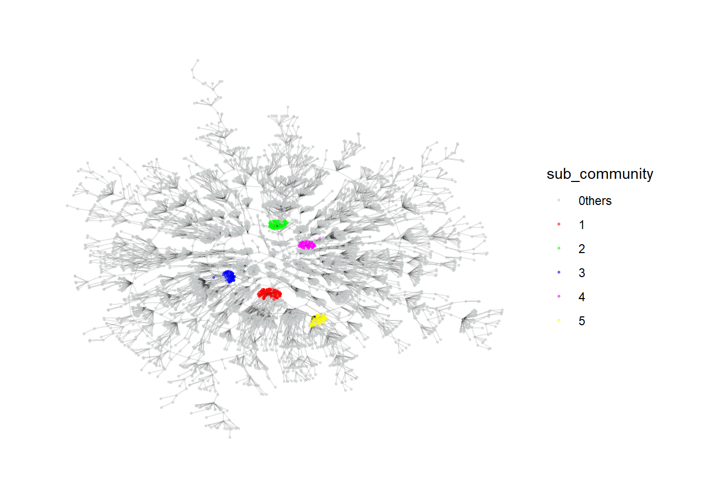
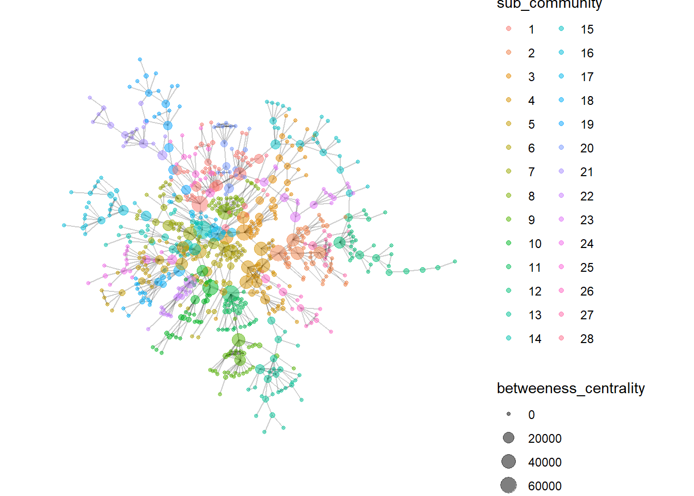
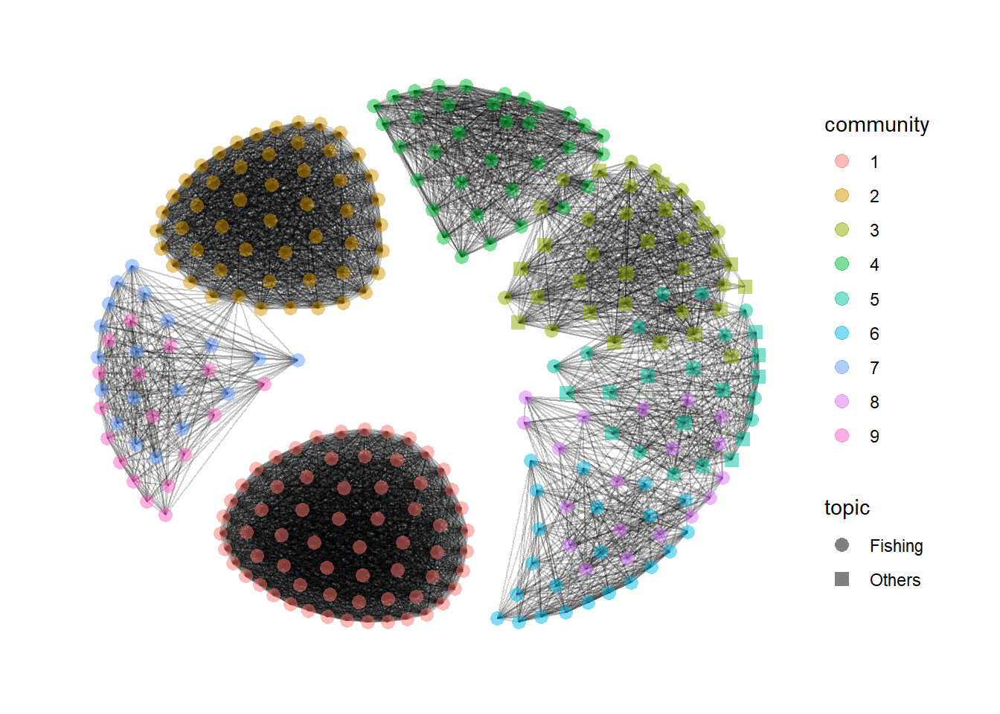

pacman::p_load(jsonlite, tidygraph, ggraph, visNetwork, tidyverse, tidytext, ggforce, visNetwork, graphlayouts, skimr, igraph,
topicmodels, tm, topicdoc,
textclean, tidytext, widyr)Take-home Exercise 3
Exploring Vast Challenge Data
For this exercise, we will be looking at Mini-Challenge 3 of the VAST Challenge 2023 which is exploring ways to identify companies that may be engaged in illegal fishing. Specifically, this exercise aims to identify similarities among the companies and group them appropriately.
Install and launching R packages
The code chunk below uses p_load() of pacman package to check if the relevant packages are installed in the computer. If they are, then they will be launched into R. The data in JSON format is then loaded using the jsonlite package.
jsonlite: Provides functions for working with JSON data.tidygraph: Provides tidyverse style interface for working with graph data.ggraph: Flexible and intuitive grammar of graphics approach for visualizing graphs.igraph: For working and analyzing graph data.visNetwork: For creating interactive network visualizations.tidyverse: A collection of core packages designed for data science, used extensively for data preparation and wrangling.tidytext: For text mining and analysis following tidyverse data principles.ggforce: Extends capabilities of ggplot2 such as animating plots.graphlayouts: Provides various layout algorithms for visualizing network graphs.skimr: Provides compact summaries of datasets.topicmodels: Provides tools for fitting and analyzing topic models.tm: Provides tools for text mining and analysistopicdoc: Topic-specific diagnostics for topic models usingtopicmodelstextclean: For cleaning and processing texttidytext: Tool for text mining and analysis built on top of tidyverse ecosystemwidyr: For pairwise comparisons and calculations in tidy data format
MC3 <- fromJSON("data/MC3.json")Loading Edges Data
The following code chunk extracts and transforms the edges data from the main data set. Only distinct edges are used. No missing data were found. From the bar chart below, the data seems to contain mainly links from companies to individuals who are either beneficial owners or company contacts.
Code
MC3_edges <- as_tibble(MC3$links) %>%
distinct() %>%
mutate(source = as.character(source),
target = as.character(target),
type = as.character(type)) %>%
group_by(source, target, type) %>%
summarise(weights = n()) %>%
filter(source!=target) %>%
ungroup()Code
skim(MC3_edges)| Name | MC3_edges |
| Number of rows | 24036 |
| Number of columns | 4 |
| _______________________ | |
| Column type frequency: | |
| character | 3 |
| numeric | 1 |
| ________________________ | |
| Group variables | None |
Variable type: character
| skim_variable | n_missing | complete_rate | min | max | empty | n_unique | whitespace |
|---|---|---|---|---|---|---|---|
| source | 0 | 1 | 6 | 700 | 0 | 12856 | 0 |
| target | 0 | 1 | 6 | 28 | 0 | 21265 | 0 |
| type | 0 | 1 | 16 | 16 | 0 | 2 | 0 |
Variable type: numeric
| skim_variable | n_missing | complete_rate | mean | sd | p0 | p25 | p50 | p75 | p100 | hist |
|---|---|---|---|---|---|---|---|---|---|---|
| weights | 0 | 1 | 1 | 0 | 1 | 1 | 1 | 1 | 1 | ▁▁▇▁▁ |
Code
ggplot(data = MC3_edges,
aes(x = type)) +
geom_bar()
Loading Nodes Data
The following code chunk extracts and transforms the nodes data from the data set. However, as the main objective is centered around businesses, we will only be focusing on companies and not individuals. Hence, the type of nodes is recoded to only reflect companies and non-companies. Each company is ensured to be uniquely identifiable by concatenating the records of multiple instances into a single row. Revenue data is computed as the sum of all instances.
Code
MC3_nodes <- as_tibble(MC3$nodes) %>%
distinct() %>%
mutate(country = as.character(country),
id = as.character(id),
product_services = as.character(product_services),
revenue_omu = as.numeric(as.character(revenue_omu)),
type = as.character(type)) %>%
mutate(type = gsub("Company Contacts", "Contacts", type)) %>%
mutate(product_services = ifelse(product_services == "character(0)" | product_services == "Unknown", '', product_services)) %>%
group_by(id) %>%
summarise(countries = paste(country, collapse = ", "),
types = paste(type, collapse = ", "),
revenue = sum(revenue_omu),
description = paste(product_services, collapse = ";")) %>%
mutate(types = ifelse(grepl("\\bCompany\\b", types), "Company", "Non-Company"),
description = ifelse(grepl("\\b\\w+\\b", description), description, NA)) %>%
select(id, countries, types, revenue, description)From the summary below, we can see that revenue data is only available for about 20% of the records. Hence, we will not be using the revenue data for further investigation. While the description data faces a similar issue, there are still merits to explore similarities among businesses based on it which will be discussed in subsequent sections.
skim(MC3_nodes)| Name | MC3_nodes |
| Number of rows | 22929 |
| Number of columns | 5 |
| _______________________ | |
| Column type frequency: | |
| character | 4 |
| numeric | 1 |
| ________________________ | |
| Group variables | None |
Variable type: character
| skim_variable | n_missing | complete_rate | min | max | empty | n_unique | whitespace |
|---|---|---|---|---|---|---|---|
| id | 0 | 1.00 | 6 | 64 | 0 | 22929 | 0 |
| countries | 0 | 1.00 | 2 | 120 | 0 | 211 | 0 |
| types | 0 | 1.00 | 7 | 11 | 0 | 2 | 0 |
| description | 19035 | 0.17 | 4 | 1738 | 0 | 3272 | 0 |
Variable type: numeric
| skim_variable | n_missing | complete_rate | mean | sd | p0 | p25 | p50 | p75 | p100 | hist |
|---|---|---|---|---|---|---|---|---|---|---|
| revenue | 17664 | 0.23 | 1637722 | 16795453 | 3652.23 | 7826.67 | 16366.67 | 49964.69 | 308249623 | ▇▁▁▁▁ |
The bar chart below reveals that the majority of the records are actually related to non-company records. When we dive further into the breakdown, we realized that the descriptions actually makes up about half of all companies. Non-companies’ description have little meaning. Hence, we will investigate further in subsequent sections.
Code
cool_palette <- c("#78c2c4", "#C4C8C8")
MC3_nodes %>%
group_by(types) %>%
summarise(unknown_services = sum(is.na(description)),
known_services = sum(!is.na(description))) %>%
pivot_longer(cols = c(unknown_services, known_services),
names_to = "Service_Type",
values_to = "Count") %>%
ggplot(aes(x = types, y = Count, fill = Service_Type)) +
geom_bar(stat = "identity") +
labs(x = "Types", y = "Count", fill = "Service Type") +
scale_fill_manual(values = cool_palette)
Final labelled nodes data
With the result of the topic model, we merge those labels with the original nodes data to obtain a final nodes data for further analysis in subsequent sections.
Code
MC3_nodes_labelled <- MC3_nodes %>%
mutate(topic = NA) %>%
left_join(MC3_nodes_filtered, by = c("id", "countries", "types", "description")) %>%
mutate(topic = ifelse(is.na(topic.x) & is.na(topic.y), "Unknown", topic.y)) %>%
select(id, countries, types, revenue.x, description, topic) %>%
mutate(revenue = revenue.x) %>%
select(id, countries, types, revenue, description, topic)Visualizing Network with Community Detection
First, we will explore the complete nodes and edges data by construct the entire network to check if the network is disconnected using group_components.
Code
id1 <- MC3_edges %>%
select(source) %>%
rename(id = source)
id2 <- MC3_edges %>%
select(target) %>%
rename(id = target)
MC3_nodes_comm <- rbind(id1, id2) %>%
distinct() %>%
left_join(MC3_nodes_labelled,
unmatched = "drop") %>%
replace_na(list(countries = "Unknown",
types = "Unknown",
description = "Unknown",
topic = "Unknown"))
MC3_graph <- tbl_graph(nodes = MC3_nodes_comm,
edges = MC3_edges,
directed = FALSE) %>%
mutate(betweeness_centrality = centrality_betweenness(),
closeness_centrality = centrality_closeness(),
community = as.factor(group_components()),
node_size = ifelse(topic == "Fishing", 0.55, 0.5))Based on the table below, we can tell that the network comprise of a large majority network coupled with 4 other smaller networks. For our exercise, we will focus on the larger network.
Code
temp <- MC3_graph %>%
activate(nodes) %>%
as.tibble()
temp %>%
group_by(community) %>%
summarise(count = n()) %>%
arrange(desc(count)) %>%
filter(count >100)# A tibble: 5 × 2
community count
<fct> <int>
1 1 6628
2 2 293
3 3 137
4 4 135
5 5 114Based on the network graph below, we can tell that the fishing related companies are quite sparsely distributed across the network with no significant signs of them falling into a cluster. We will try to carry out community detection on this network to see if we can detect more granular sub-communities within it.
Code
my_colors <- c("#3C53F2", "#CFFAB6", "#C4C8C8")
my_sizes <- c(1, 0.5, 0.5)
MC3_graph %>%
filter(community == 1) %>%
ggraph (layout = 'kk') +
geom_edge_link(aes(), alpha=0.1) +
geom_node_point(aes(
colour = topic,
size = topic),
alpha = 0.5) +
scale_color_manual(values = my_colors) +
scale_size_manual(values = my_sizes) +
theme_graph()
Investigating Largest Connected Community
Using group_label_prop()
First, we explore the label propagation algorithm. As the number of sub_communities generated is very large, we will only focus on the top 5 communities with the highest number of nodes.
Code
MC3_graph_largest <- MC3_graph %>%
filter(community == 1) %>%
select(-c(betweeness_centrality, closeness_centrality, community)) %>%
mutate(betweeness_centrality = centrality_betweenness(),
closeness_centrality = centrality_closeness(),
sub_community = as.factor(group_label_prop()))Code
temp <- MC3_graph_largest %>%
activate(nodes) %>%
as.tibble()
temp %>%
group_by(sub_community) %>%
summarise(count = n()) %>%
arrange(desc(count)) %>%
filter(count >1)# A tibble: 646 × 2
sub_community count
<fct> <int>
1 1 122
2 2 96
3 3 74
4 4 64
5 5 62
6 6 54
7 7 53
8 8 52
9 9 51
10 10 50
# ℹ 636 more rowsFrom the graph, the algorithm seems to be able to generate relatively effective communities as they are quite closely connected. The labels can serve as a feature for further downstream investigation.
Code
my_colors <- c("#C4C8C8", "#FF0000", "#00FF00", "#0000FF", "#FF00FF", "#FFFF00")
plot_top5 <- MC3_graph_largest %>%
mutate(sub_community = ifelse(as.numeric(sub_community) >5, "0thers", sub_community)) %>%
ggraph (layout = 'kk') +
geom_edge_link(aes(), alpha=0.1) +
geom_node_point(aes(
colour = sub_community),
alpha = 0.5,
size = 0.5
) +
scale_color_manual(values = my_colors) +
theme_graph()
plot_top5
Using group_infomap
Similarly, we will explore another algorithm using group_infomap. The top 5 generated clusters also seem to be quite dense and can be possibly used for further investigation as well.
Code
MC3_graph_largest <- MC3_graph %>%
filter(community == 1) %>%
select(-c(betweeness_centrality, closeness_centrality, community)) %>%
mutate(betweeness_centrality = centrality_betweenness(),
closeness_centrality = centrality_closeness(),
sub_community = as.factor(group_infomap()))Code
temp <- MC3_graph_largest %>%
activate(nodes) %>%
as.tibble()
temp %>%
group_by(sub_community) %>%
summarise(count = n()) %>%
arrange(desc(count)) %>%
filter(count >1)# A tibble: 594 × 2
sub_community count
<fct> <int>
1 1 95
2 2 73
3 3 59
4 4 54
5 5 52
6 6 51
7 7 49
8 8 47
9 9 47
10 10 47
# ℹ 584 more rowsCode
my_colors <- c("#C4C8C8", "#FF0000", "#00FF00", "#0000FF", "#FF00FF", "#FFFF00")
plot_top5 <- MC3_graph_largest %>%
mutate(sub_community = ifelse(as.numeric(sub_community) >5, "0thers", sub_community)) %>%
ggraph (layout = 'kk') +
geom_edge_link(aes(), alpha=0.1) +
geom_node_point(aes(
colour = sub_community),
alpha = 0.5,
size = 0.5
) +
scale_color_manual(values = my_colors) +
theme_graph()
plot_top5
Visualizing Network by Common Links between Companies
Besides investigating the entire network, we can also focus on company nodes alone, with the edges defined as having common owners or contacts between the companies. This alternative network will then be able to provide some insights on companies that are strongly related to each other through a couple of individuals. For this investigation, we assume that the source column of the edges data are all companies while the target column comprises of individuals that are related to them since the type in the edges data consists of only beneficial owners and company contacts. We will generate the data by joining the edges data table by itself on the target column and filtering away all sources that have the same companies. We will also check if the resulting network comprise of any disconnected communities.
Code
MC3_edges_links <- MC3_edges %>%
left_join(MC3_edges, by = join_by(target, type)) %>%
filter(source.x != source.y) %>%
select(source.x, source.y, target) %>%
group_by(source.x, source.y) %>%
summarise(weight = n())
id1 <- MC3_edges_links %>%
select(source.x) %>%
rename(id = source.x)
id2 <- MC3_edges_links %>%
select(source.y) %>%
rename(id = source.y)
MC3_nodes_links <- rbind(id1, id2) %>%
distinct() %>%
left_join(MC3_nodes_labelled,
unmatched = "drop") %>%
replace_na(list(countries = "Unknown",
types = "Unknown",
description = "Unknown",
topic = "Unknown"))
MC3_graph_links <- tbl_graph(nodes = MC3_nodes_links,
edges = MC3_edges_links,
directed = FALSE) %>%
mutate(betweeness_centrality = centrality_betweenness(),
closeness_centrality = centrality_closeness(),
community = as.factor(group_components()))From the table below, we can tell that about 700 companies are actually connected in some ways with each other while the rest make up small networks among themselves. We will investigate the large network in more detail to see if any insights can be drawn.
temp <- MC3_graph_links %>%
activate(nodes) %>%
as.tibble()
temp %>%
group_by(community) %>%
summarise(count = n()) %>%
arrange(desc(count))# A tibble: 5,431 × 2
community count
<fct> <int>
1 1 733
2 2 32
3 3 16
4 4 15
5 5 13
6 6 13
7 7 12
8 8 12
9 9 12
10 10 11
# ℹ 5,421 more rowsInvestigating Largest Linked Community
We will be using the group_edge_betweeness to determine the community structure for the linked network. The generated communities seem to be relatively similar in size, at least for the top few communities.
Code
MC3_graph_links_largest <- MC3_graph_links %>%
filter(community == 1) %>%
select(-c(betweeness_centrality, closeness_centrality, community)) %>%
mutate(betweeness_centrality = centrality_betweenness(),
closeness_centrality = centrality_closeness(),
sub_community = as.factor(group_edge_betweenness()))Code
temp <- MC3_graph_links_largest %>%
activate(nodes) %>%
as.tibble()
temp %>%
group_by(sub_community) %>%
summarise(count = n()) %>%
arrange(desc(count))# A tibble: 28 × 2
sub_community count
<fct> <int>
1 1 45
2 2 43
3 3 42
4 4 41
5 5 35
6 6 33
7 7 33
8 8 32
9 9 32
10 10 32
# ℹ 18 more rowsThe network graph also suggests high betweeness centrality companies that links most of the other companies together forming the bridges of the communities. It may be worthwhile to further investigate these companies in detail.
Code
MC3_graph_links_largest %>%
#mutate(sub_community = ifelse(as.numeric(sub_community) >5, "0thers", sub_community)) %>%
ggraph (layout = 'kk') +
geom_edge_link(aes(), alpha=0.1) +
geom_node_point(aes(
colour = sub_community,
size = betweeness_centrality),
alpha = 0.5
) +
#scale_color_manual(values = my_colors) +
theme_graph()
Visualizing Network with Textual Data
Finally, we can also find similar companies based on their descriptions. Unlike with topic modeling, we will carry out pairwise similarity calculations for all companies to check if companies have similar businesses. Those with similar businesses will firm edges with each other and we will explore if the resulting network can give us some insights.
Code
cleaned_data <- MC3_nodes_filtered %>%
select(id, description) %>%
unnest_tokens(word, description) %>%
anti_join(stop_words) %>%
count(id, word, sort = TRUE) %>%
bind_tf_idf(word, id, n)
similarity_edge <- pairwise_similarity(cleaned_data, id, word, tf_idf) %>%
filter(similarity > 0.95) %>%
rename(source = item1) %>%
rename(target = item2) %>%
rename(weight = similarity)Code
id1 <- similarity_edge %>%
select(source) %>%
rename(id = source)
id2 <- similarity_edge %>%
select(target) %>%
rename(id = target)
similarity_nodes <- rbind(id1, id2) %>%
distinct() %>%
left_join(MC3_nodes_labelled,
unmatched = "drop") %>%
replace_na(list(countries = "Unknown",
types = "Unknown",
description = "Unknown",
topic = "Unknown"))
MC3_graph_similarity <- tbl_graph(nodes = similarity_nodes,
edges = similarity_edge,
directed = FALSE) %>%
mutate(betweeness_centrality = centrality_betweenness(),
closeness_centrality = centrality_closeness(),
community = as.factor(group_edge_betweenness()))Code
temp <- MC3_graph_similarity %>%
activate(nodes) %>%
as.tibble()
temp %>%
group_by(community) %>%
summarise(count = n(),
pct_Fishing = as.integer(sum(topic == "Fishing")/count*100),
pct_Others = as.integer(sum(topic == "Others")/count*100)) %>%
arrange(desc(count))# A tibble: 222 × 4
community count pct_Fishing pct_Others
<fct> <int> <int> <int>
1 1 65 100 0
2 2 52 100 0
3 3 38 42 57
4 4 35 100 0
5 5 24 45 54
6 6 22 100 0
7 7 19 100 0
8 8 19 100 0
9 9 17 100 0
10 10 17 58 41
# ℹ 212 more rowsFrom the generated graph of the top 10 communities, companies in communities 1 and 2 are very densely connected to each other, suggesting very clear and distinct similarities in their businesses. The other communities seem to have some overlapping business descriptions. This may suggest an alternative method to classify the business similarities based on their descriptions for further investigation to detect anomalies.
Code
MC3_graph_similarity %>%
filter(as.numeric(community) < 10) %>%
ggraph (layout = 'kk') +
geom_edge_link(aes(), alpha=0.1) +
geom_node_point(aes(
colour = community,
shape = topic),
alpha = 0.5,
size = 3) +
scale_shape_manual(values = c(16,15)) +
theme_graph()